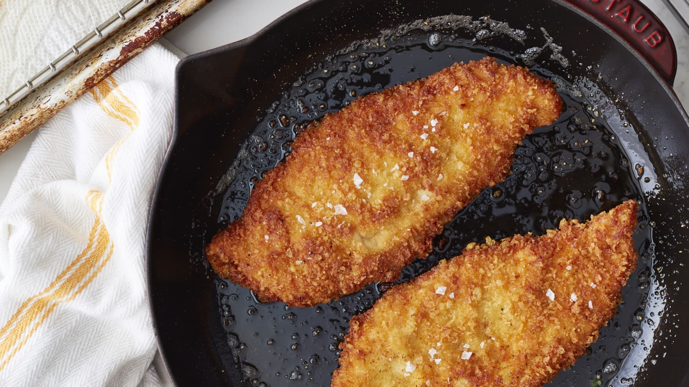
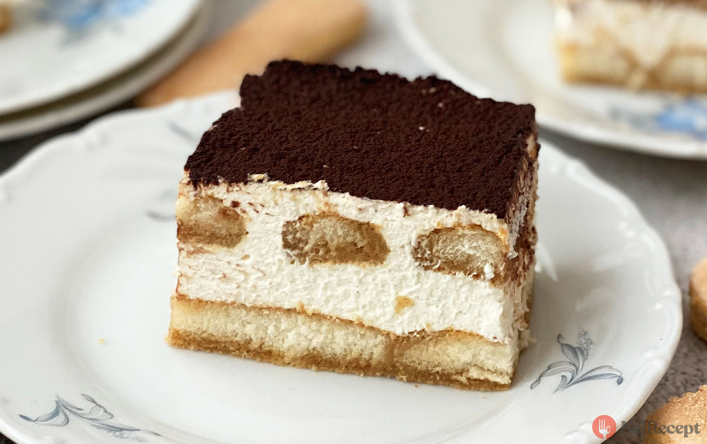

Odin Recipes
New York styled pizza
Pizza dough
454g
Pizza sauce
Tomato sauce
360ml
Garlic
2 cloves
Oregano
1 teaspoon
Dried basil
1 teaspoon
Salt and pepper
Mozzarela cheese
227g
Grated parmesan cheese
25g
Olive oil
1-2 tablespoons
Cornmeal flour
2 tablespoons
How to make new york styled pizza
Fried chicken breasts
Chicken breasts
2 pieces
All-purpose flour
1 cup
Salt
1 teaspoon
Black pepper
1 teaspoon
Garlic powder
1 teaspoon
Paprika
1 teaspoon
Buttermilk
1 cup
Vegetable oil

How to make fried chicken breasts
Tiramisu
Egg yolks
6
Granulated sugar
4 cups
Mascarpone cheese
1 cup
Heavy cream
11 cups
Espresso
2 cups
Ladyfinger biscuits
1 package
Cocoa powder for dusting

How to make tiramisu